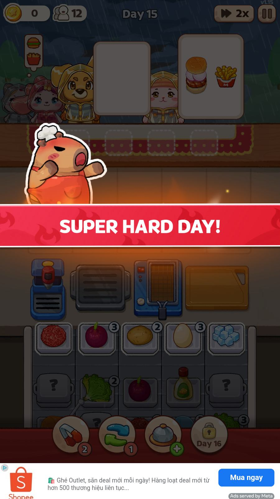
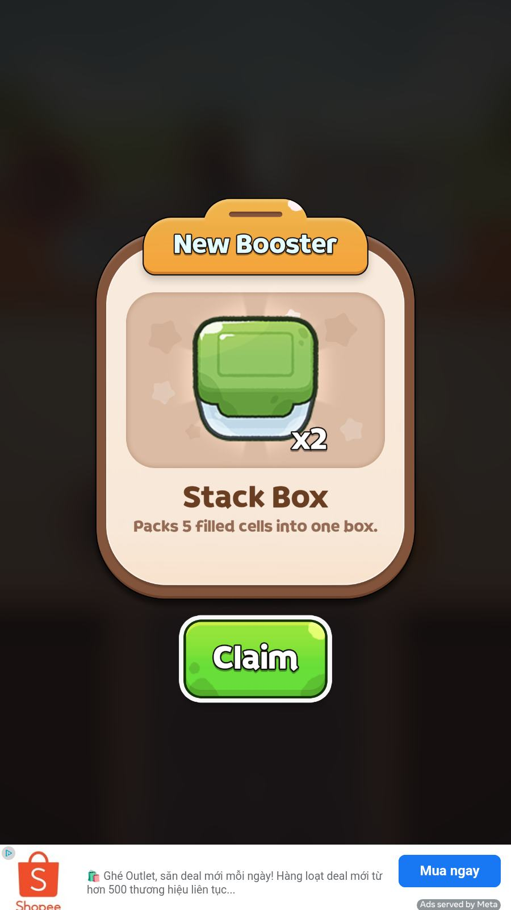
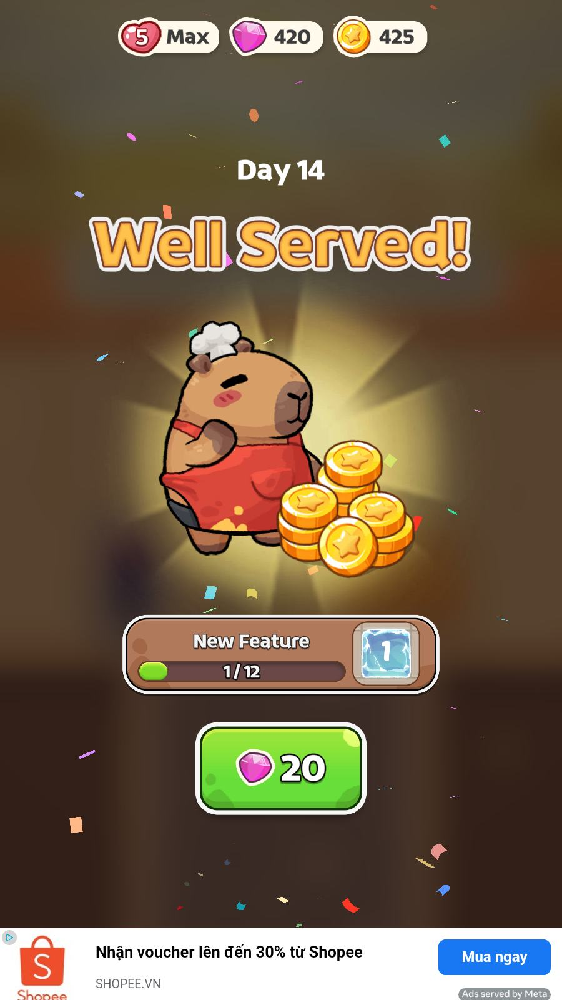
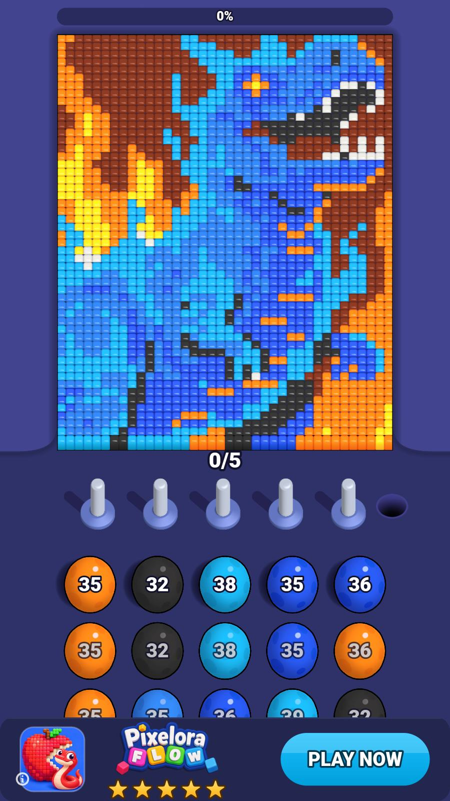
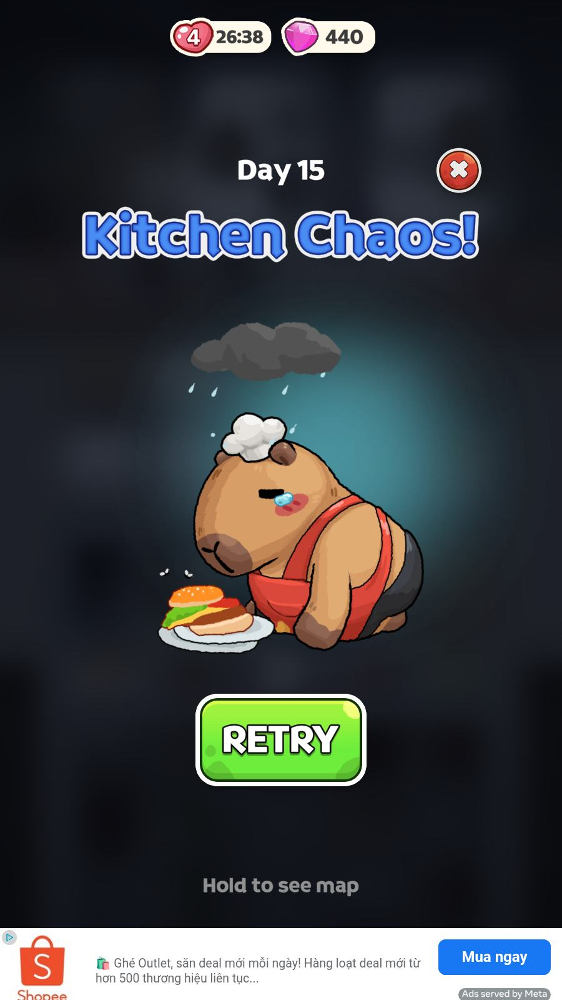
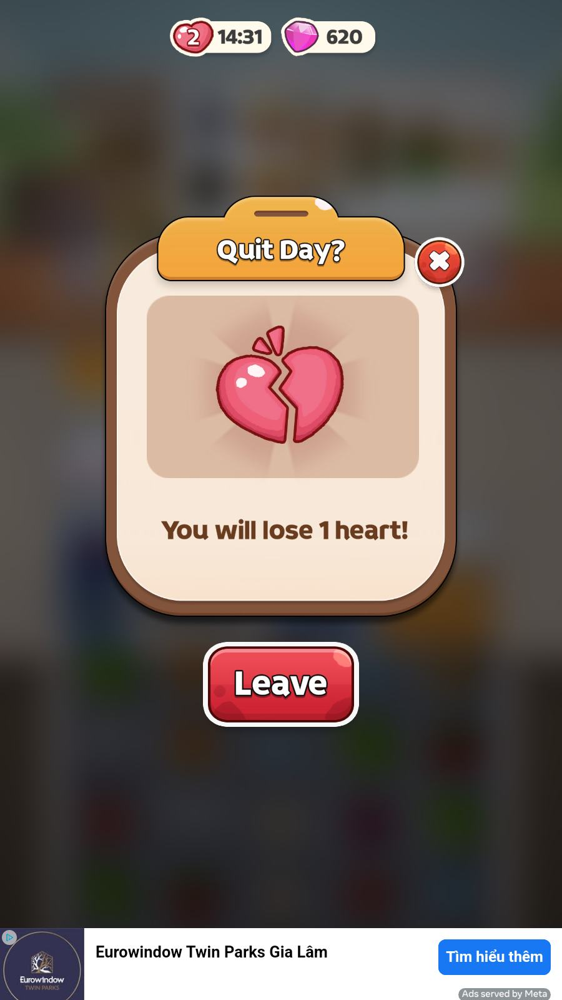
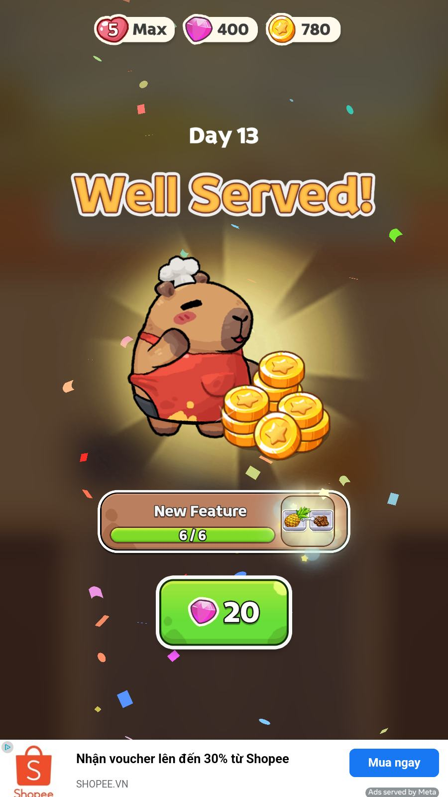

Luồng màn: vào, thắng, thua
Mô tả
- Một màn ("Day N") đi qua: bấm nút Day, giữ 1 tim, nạp level và scene, hướng dẫn nếu có, chơi, rồi Win hoặc Lose.
- Thắng: mọi khách rời; nhận coin đã kiếm trong màn, gem theo độ khó (20 / 60 / 100) và được hoàn tim; mở Day kế tiếp. Sao luôn ghi 3.
- Thua: hết chỗ (Out of Slots), kẹt băng (Out of Moves) hoặc khách hết kiên nhẫn (Out of Patience); mỗi lần có Save-Me (900 gems), từ chối thì tim bị trừ và hiện RETRY.
- Thoát giữa chừng: Pause rồi Leave, popup "Quit Day?" báo mất 1 tim.
- Ba độ khó (Normal, Hard, Super Hard) đổi nút Day (xanh, tím, đỏ), banner đầu màn, tiêu đề màn kết quả và gem thưởng.
Thiết kế chi tiết
Tóm tắt thiết kế
- Code Tim chỉ tạm giữ: vào màn giữ 1 tim, thắng thì hoàn (
RecoverHeart"win"), thua hoặc Leave thì mất (ReleaseHeartHolder). Khác 1.11, nơi tim trong màn không bao giờ mất. - APK Gem thắng 20 / 60 / 100 theo độ khó; sao luôn 3 (
stars= 3), nên sao không phải thước đo độ giỏi. - Playtest Màn Win chỉ có một nút claim (gem); từ Day 16 sau claim có quảng cáo xen kẽ; sau đó luôn về Home, không vào thẳng màn kế.
- Playtest Retry cho cùng bố cục và cùng đơn (seed cố định): người chơi học level qua các lần thua.
- Live 16/11 Server ghi đè dữ liệu level bằng
map_config_<map>_lv_all_override_defaultcho 13 map (thêm croissant và tacos, 1.090 level chơi được so với 1.030 trong APK). - Nhận định Thưởng 20 / 60 / 100 gem tăng gấp 3 và 5 lần cho ngày khó là móc kéo người chơi vào các Hard và Super Hard (tag 1 và 2 chiếm khoảng 27 đến 30 phần trăm level).
Luồng người chơi từng bước
- Vào mànNgười chơi PlaytestBấm Day N; ngày khó có banner và nền khác.

Banner "SUPER HARD DAY!" trước Day 15, nền mưa sấm - Giới thiệu cơ chế mớiHệ thống PlaytestPopup tặng booster hoặc giới thiệu Linked trước khi chơi.

Day 16: popup "New Booster" tặng Stack Box ×2 trước khi vào màn - ChơiNgười chơi CodeXem CoreLoop.
- ThắngHệ thống PlaytestMàn Win, coin, thanh New Feature, nút gem.

Màn Win Day 13: Well Served!, +375 coin, thanh New Feature 6/6, nút gem 20 
Win Super Hard Day 15: Kitchen Legend!, +515 coin, nút gem 100 
Thanh "New Feature 1/12" ở màn Win Day 14 (icon khối băng) - Claim và quảng cáoNgười chơi PlaytestBấm gem; từ Day 16 xem quảng cáo xen kẽ, rồi về Home.

Day 18: sau nút gem 20 có quảng cáo playable xen kẽ rồi mới về Home - ThuaHệ thống PlaytestPopup Save-Me, đóng thì màn thua với RETRY.

Thua Day 15: Kitchen Chaos!, tim 4 kèm đồng hồ hồi, RETRY 
Thua Hard Day 20: Too Tough!, tim 2, RETRY - Thoát giữa chừngNgười chơi PlaytestPause, Home, Leave: mất 1 tim.

Popup "Quit Day? You will lose 1 heart!" với nút Leave đỏ


Kết quả và thưởng theo độ khó
| Độ khó (difficultyTag) | Nút Day | Tiêu đề thắng | Tiêu đề thua | Gem thắng | Nhãn |
|---|---|---|---|---|---|
| Normal (0) | xanh | Well Served! | chưa gặp | 20 | Playtest + RC |
| Hard (1) | tím | Chef's Triumph! | Too Tough! | 60 | RC (chưa thắng Hard) |
| Super Hard (2) | đỏ | Kitchen Legend! | Kitchen Chaos! | 100 | Playtest + RC |
Tiêu đề từ Data/text/en-GB.json (endgame_win_*, endgame_lose_*, well_served). Burger: Hard Day 5, 10, 20, 25, 34, 37...; Super Hard Day 15, 30, 40, 50, 60, ... 100 (từ dữ liệu difficultyTag).
Tim khi vào, thắng, thua
| Tình huống | Tim | Hàm | Nhãn |
|---|---|---|---|
| Vào màn | giữ 1 (holder) | HeartSystemController.UseOneHeart | Code |
| Thắng | hoàn 1 | HeartSystemController.RecoverHeart ("win") | Code + Playtest |
| Thua | mất 1 | HeartSystemController.ReleaseHeartHolder | Code + Playtest |
| Leave giữa màn | mất 1 (popup báo trước) | UIInLevelCakeOrder.ConfirmLoseHeartThen | Playtest |
| Lỗi nạp màn | hoàn 1 | RecoverHeart ("level_setup_failed") | Code |
Chi tiết hồi tim ở Hearts.
Phiên chơi Day 13–20 (burger, 16/11)
| Day | Độ khó | Số khách | Kết quả | Ghi chú |
|---|---|---|---|---|
| 13 | Normal | 10 | Thắng | +375 coin, 20 gem |
| 14 | Normal | 8 | Thắng | +245 coin; Linked mở |
| 15 | Super Hard | 12 | Thua ×3, tưởng kẹt ×1, thắng lần 5 | +515 coin, 100 gem; có ca tưởng kẹt |
| 16 | Normal | 11 | Thắng | +340 coin; Stack Box mở |
| 17 | Normal | 14 | Thắng | Gà rán, khay bột |
| 18 | Normal | 14 | Thắng | +445 coin |
| 19 | Normal | 12 | Thắng | +190 coin |
| 20 | Hard | 15 | Thua, rồi thoát giữa chừng | Too Tough! |
Nguồn: RESULTS_LIVE và Data/levels/burger; số khách khớp numCustomers.
Vận dụng cho game khác
- Giữ tim như "cọc" (giữ khi vào, hoàn khi thắng) làm người chơi cảm nhận rõ cái giá của việc thua mà không cần hiện thanh sinh lực trong màn.
- Thưởng cố định theo độ khó (20 / 60 / 100) và sao luôn 3 giúp bỏ hẳn hệ thống sao, đỡ phải cân bằng thưởng.
- Seed level cố định giữa các lần thử lại để người chơi học bố cục thay vì dựa vào may rủi.
Bảng tổng hợp mọi tính năng đã làm chi tiết: FoodiePop_ThietKeChiTiet.xlsx.
Mở khóa & điểm vào
Day 1 có sẵn. Mỗi Day mở khi thắng Day trước (PlayerMapLevelProgressDataAccess.UnlockLevel). Map kế tiếp mở sau khi qua Day 30 của map trước (playtest: "Pass day 30 of the previous restaurant to unlock"). Hard xuất hiện từ Day 5 ở burger, Super Hard từ Day 15.
Điểm vào:
- Nút "Day N" trên Home map (xanh Normal, tím Hard, đỏ Super Hard)
- Nút RETRY sau khi thua; nút Restart trong menu Pause
- Popup "More Lives" khi hết tim (Hearts)
Cách hoạt động
- Bấm Day: kiểm tim (
HeartSystemController.IsEnoughHeartToReplayLevel), nếu thiếu hiệnUIPopupHeartRefill. PlayLevel/SetUpBeforeLoadLevelScenenạp dữ liệu level, dựng cấp nâng cấp dụng cụ (BuildToolUpgrades), giữ 1 tim bằng holder (HeartSystemController.UseOneHeart).LoadNextLevelWeathernạp scene thời tiết, scene FS<Map> và HUD; banner "SUPER HARD DAY!" nếu là ngày khó nhất.SetUpAfterSpawnLevelScene, rồi tutorial nếu chưa làm (ShowUITutorialThenLevelTut, khoá "DoneTut-<id>"), rồiProcessStartPlay.- Chơi (CoreLoop). Mỗi lần HUD có nút 2x, Pause và đếm khách còn lại.
- Khi
LevelPlayStatethành Ended,OnPlayerStateChangedgọiProcessEndGame: dựngCakeLevelEndResultData(kết quả, lý do, thời lượng, tim còn lại, sao, coin, gem). - Thắng: ghi tiến độ (
RecordLevelEnd), mở level kế, hoàn tim (RecoverHeartlý do "win"), hiệnUIEndGameWin. - Thua:
ReleaseHeartHolder(tim bị trừ), hiệnUIEndGameLose(RETRY, X, "Hold to see map"). - Bấm claim ở màn Win: cộng gem, có thể có quảng cáo xen kẽ (Day 16 trở đi), màn Loading rồi về Home.
Ảnh chụp
Bấm ảnh để phóng to, dùng phím ← → để chuyển ảnh. Nhãn màu cho biết nguồn bằng chứng của ảnh.


Phần thưởng
| Ngữ cảnh | Phần thưởng | Evidence |
|---|---|---|
| Thắng Normal | 20 gem (nút claim) + coin kiếm trong màn | UIEndGameWin.OnSetUpOnCreated |
| Thắng Hard | 60 gem theo rwWinByDifficulty (chưa quan sát: Day 20 chưa thắng) | GameProgressScenario.GetWinRewardMultipliers |
| Thắng Super Hard | 100 gem (Day 15: 440 lên 540); coin +515 | UIEndGameWin.OnSetUpOnCreated |
| Thắng level extra | Gem và coin nhân 0,5 | GameProgressScenario.GetWinRewardMultipliers |
| Thắng | Hoàn 1 tim giữ lúc vào màn | HeartSystemController.RecoverHeart |
Số liệu chính
| Chỉ số | Giá trị | Nguồn |
|---|---|---|
| Số level trong APK | 11 map × 100 = 1.100 thiết kế; 1.030 chơi được (bento 30) | Data/levels/_stats.json (apk) |
| Số level trên server 16/11 | 13 map, 1.090 chơi được (thêm croissant 30 và tacos 30; pizza 30; bento 100) | Data/levels/_stats.json (server) |
| Phân bố độ khó burger | Normal 73, Hard 18, Super Hard 9 | _stats.json |
| Phân bố độ khó các map khác | khoảng 70 / 20 / 10 (coffee và sushi 73 / 17 / 10) | _stats.json |
| Gem thắng | 20 / 60 / 100 | reward_config.rwWinByDifficulty |
| Save-Me | 900 gems mỗi loại (3 loại) | save_me_config |
| Số khách Day 13–20 (burger) | 10, 8, 12, 11, 14, 14, 12, 15 | Data/levels/burger/L013 đến L020 |
| Tim: đồng hồ hồi | mỗi tim khoảng 30 phút (playtest 26:38 lần đầu) | RESULTS_LIVE |
Use case (12)
Bấm vào từng use case để mở. Mở/đóng tất cả
UC-01 Vào màn từ Home
Các bướcLevelPlayLoadAndSetupControl.PlayLevelSetUpBeforeLoadLevelScenenạp level, nâng cấp, giữ 1 timSetUpAfterSpawnLevelScenevàProcessStartPlay
| Actor | Player |
|---|---|
| Trigger | Bấm nút Day N |
| Điều kiện | Đủ tim hoặc đang tim vô hạn |
| Kết quả | Banner Hard hoặc Super Hard nếu có; HUD hiện coin 0, số khách, "Day N", nút 2x, Pause |
| Quy tắc / số liệu | Tim hiển thị giảm 1 khi vào; lỗi nạp thì RecordSetupFailure và ReturnHomeAfterSetupFailure hoàn tim (lý do "level_setup_failed") |
| Evidence | LevelPlayLoadAndSetupControl.PlayLevel |
UC-02 Hướng dẫn trong màn
Các bướcShowUITutorialThenLevelTutrồiProcessLevelBaseTutIsLevelTutDone/SetLevelTutDoneghi khoá- Popup giới thiệu cơ chế (Linked, Combined, ô mới) ở
UIInLevelCakeOrder
| Actor | System |
|---|---|
| Trigger | Level có tutId hoặc cơ chế mới lần đầu |
| Điều kiện | Chưa có khoá "DoneTut-<id>" |
| Kết quả | Burger Day 1 "first", Day 4 "second"; booster "pickup", "boss", "shipper" có tutorial riêng |
| Quy tắc / số liệu | Chi tiết ở InGameTutorial |
| Evidence | LevelPlayLoadAndSetupControl.ShowUITutorialThenLevelTut |
UC-03 Thắng màn
Các bướcLevelPlayLoadAndSetupControl.ProcessEndGameđặtresultType= Win (2)PlayerMapLevelProgressDataAccess.RecordLevelEndrồiUnlockLevelmở Day kếHeartSystemController.RecoverHearthoàn tim ("win")UIEndGameWinhiện coin, gem, tiêu đề theo độ khó
| Actor | System |
|---|---|
| Trigger | Khách cuối rời |
| Điều kiện | EndGameService.CheckEndGame: mọi khách đã rời |
| Kết quả | Playtest Day 13: coin 405 lên 780 (+375), gem 400 lên 420 sau claim; tim vẫn 5 (Max) |
| Quy tắc / số liệu | Tiêu đề: Well Served! (Normal), Chef's Triumph! (Hard), Kitchen Legend! (Super Hard) |
| Evidence | LevelPlayLoadAndSetupControl.ProcessEndGame |
UC-04 Claim thưởng thắng
Các bướcUIEndGameWin.OnClickNextcộng gem (GetNumFlyHardCurrency) và chạy hiệu ứng bayOnClickNextRewardAdsBonuslà biến thể thưởng thêm bằng quảng cáo (lvShowBonusAds3)- Quảng cáo xen kẽ sau claim từ Day 16 (Day 13 và 14 không có)
- Màn Loading rồi Home
| Actor | Player |
|---|---|
| Trigger | Bấm nút xanh có icon gem |
| Điều kiện | Đang ở màn Win |
| Kết quả | Gem: Normal 20, Super Hard 100 (Day 15). Màn Win chỉ có một nút (BACK và chạm trống không làm gì) |
| Quy tắc / số liệu | Day 15: nút "100" không có icon video nhưng mở quảng cáo thưởng rồi cộng 100 gem (ghi chú playtest, chưa phân tách được đường ads và không ads) |
| Evidence | UIEndGameWin.OnClickNext |
UC-05 Thua vì Out of Slots rồi Save-Me
Các bướcLevelBaseCakeOrderAbstract.TriggerOutOfServeSlotLevelSaveMeControl.HandleOutOfServeSlotrồiShowSaveMe- Chọn gom vào túi (900 gems) hoặc đóng popup
| Actor | System |
|---|---|
| Trigger | Lưới đầy không nước đi |
| Điều kiện | GridIngController.OnGridFullTimeout và IsAllowInteract |
| Kết quả | Đóng popup thì LevelSaveMeControl.Lose đưa tới UIEndGameLose |
| Quy tắc / số liệu | Day 15 và Day 20 đều có Fail Offer (Best, 2.700 gems, 5,99$) trong popup |
| Evidence | LevelSaveMeControl.HandleOutOfServeSlot |
UC-06 Màn thua
Các bướcProcessEndGameđặtendReason(OutOfServeSlots 6, BeltDeadlock 7, CustomerTimeout 5, OutOfHearts 8...)HeartSystemController.ReleaseHeartHolderlàm tim bị trừUIEndGameLosehiện tiêu đề, RETRY, X, "Hold to see map"
| Actor | System |
|---|---|
| Trigger | Từ chối Save-Me |
| Điều kiện | resultType = Lose (1) |
| Kết quả | Day 15 Super Hard: "Kitchen Chaos!", tim 5 xuống 4 (đồng hồ hồi 26:38). Day 20 Hard: "Too Tough!" |
| Quy tắc / số liệu | Chữ "Hold to see map" gắn với BeginViewGame để xem lại bàn chơi; tiêu đề của màn thua Normal chưa gặp |
| Evidence | UIEndGameLose.OnClickRetry |
UC-07 Thử lại (RETRY, Restart)
Các bướcLevelPlayLoadAndSetupControl.CheckLiveAndRetryOnEndGamekiểm tim- Thiếu thì
UIPopupHeartRefill - Đủ thì
StartPlayRetrynạp lại cùng level
| Actor | Player |
|---|---|
| Trigger | Bấm RETRY hoặc Restart trong Pause |
| Điều kiện | Còn tim |
| Kết quả | Cùng bố cục và cùng đơn (seed cố định): playtest Day 15 và Day 20 retry cho cùng lưới, cùng khách |
| Quy tắc / số liệu | Restart giữa màn đi qua RetryDayInMidGame |
| Evidence | LevelPlayLoadAndSetupControl.CheckLiveAndRetryOnEndGame |
UC-08 Thoát giữa màn
Các bướcUIInLevelCakeOrder.ShowPauseMenuhiện PAUSED (Home, Restart)IsHeartAtStakeOnLeaverồiConfirmLoseHeartThenhiện "Quit Day? You will lose 1 heart!"- Leave:
TrackQuit(lý do ManualQuit) vàGoHomeOnMidGame
| Actor | Player |
|---|---|
| Trigger | Pause rồi Home rồi Leave |
| Điều kiện | Đang chơi |
| Kết quả | Playtest Day 20: tim 2 xuống 1; Day 15 lần 3 (tưởng kẹt, còn nước đi) người chơi thoát theo đường này |
| Quy tắc / số liệu | Chỉ báo mất tim khi IsHeartAtStakeOnLeave đúng |
| Evidence | UIInLevelCakeOrder.ConfirmLoseHeartThen |
UC-09 Thắng rồi sang Day kế
Các bướcGoHomeOnEndGamevề Home- Hoặc
CheckLiveAndPlayNextLevelkiểm tim rồiStartPlayNextLevel
| Actor | System |
|---|---|
| Trigger | Bấm claim và quảng cáo xong |
| Điều kiện | Đã thắng |
| Kết quả | Playtest: sau claim luôn về Home, nút Day mới sáng lên (không vào thẳng màn kế) |
| Quy tắc / số liệu | Đường vào thẳng màn kế có trong code nhưng không thấy trong playtest |
| Evidence | LevelPlayLoadAndSetupControl.CheckLiveAndPlayNextLevel |
UC-10 Level thưởng thêm (Extra level)
Các bướcGetWinRewardMultiplierstrả hệ sốgemMul0,5 vàgoldMul0,5 nhân thưởng thắng
| Actor | System |
|---|---|
| Trigger | Level thuộc nhóm extra |
| Điều kiện | GameProgressScenario.IsExtraLevel |
| Kết quả | Thưởng giảm nửa ở level extra |
| Quy tắc / số liệu | RC extra_level_config {gemMul 0,5; goldMul 0,5; tiers 20 / 20 / 20 / 0}. Chưa gặp trong playtest |
| Evidence | GameProgressScenario.GetWinRewardMultipliers |
UC-11 Tiến độ New Feature ở màn Win
Các bướcUIEndGameWin.IsNewFeatureBlockingchờ thanh hiện- Day 13 thanh đầy 6/6 và hiện popup Linked; Day 14 đến 19 đếm 1/12 tới 6/12
| Actor | System |
|---|---|
| Trigger | Mỗi màn Win từ Day 14 |
| Điều kiện | Có thanh "New Feature" |
| Kết quả | Thanh có icon khối băng; dự kiến đầy 12/12 sau Day 25 (suy luận) |
| Quy tắc / số liệu | Chi tiết ở NewFeatureIntro |
| Evidence | UIEndGameWin.IsNewFeatureBlocking |
UC-12 Lỗi nạp màn
Các bước- Đọc lại giá trị mặc định RC (
GetStringWithoutRuntimeOverride) và thử lại một lần (theo 1.11) - Vẫn lỗi:
RecordSetupFailure,ReturnHomeAfterSetupFailurevà hoàn tim
| Actor | System |
|---|---|
| Trigger | Lỗi dựng lịch khách hoặc hàng đợi |
| Điều kiện | TryBuildCustomerScheduleAndIngredientQueue thất bại |
| Kết quả | Người chơi về Home, không mất tim |
| Quy tắc / số liệu | Chưa gặp khi chơi |
| Evidence | LevelPlayLoadAndSetupControl.ReturnHomeAfterSetupFailure |
Cấu hình (12)
Gộp mọi nguồn: const trong code, giá trị mặc định trong APK, storage key, AB test, cờ server.
| Nguồn | Key | Kiểu | Giá trị | Ý nghĩa | Nơi định nghĩa |
|---|---|---|---|---|---|
| json default | reward_config | json | {"rwWinByDifficulty":[20,60,100],"lvShowBonusAds":3,"bonusMuls":[120,150,200],"bonus":200} | Gem thắng theo Normal / Hard / Super Hard; thưởng thêm bằng quảng cáo từ Day 3 | RC mặc định APK; live 16/11 không ghi đè |
| json default | ingame_heart_config | json | {"enableFromLv":3,"initAmount":5,"lostReasonFlags":7,"saveMeCost":500,"saveMeAdd":3,"maxAds":99} | Tim trong màn (cờ lý do mất tim 7) | RC mặc định APK |
| json default | save_me_config | list | 3 dòng; mỗi dòng enable 1, lvUnlock 0, numFree 0, giá 900, maxAds 99 | Save-Me Out of Slots / Out of Time / Out of Move | RC mặc định APK |
| json default | progress_scenario | json | {"initHardRw":900,"firstLvOutHome":8,"intervalOutHome":1,"lvUnlockShop":3,"lvUnlockLvPath":5,"lvShowBooster":3} | Mốc mở tính năng theo Day | RC mặc định APK |
| json default | extra_level_config | json | {"gemMul":0.5,"goldMul":0.5,"tiers":[{"mapAhead":2,"numLevels":20},{"mapAhead":3,"numLevels":20},{"mapAhead":4,"numLevels":20},{"mapAhead":5,"numLevels":0}]} | Level thưởng thêm | RC mặc định APK |
| json default | map_metadata_config | list | burger;100;30;5;2;3;3 ... 12 dòng (burger đến croissant; croissant cuối là ...;3;2) | Thông số theo map (100 level, 30 ...); ý nghĩa từng cột chưa giải | RC mặc định APK |
| json default | map_config_<map>_lv_metadata | string | weather;difficultyTag;numCustomers;numDishs;numIngredients;tutId, ngăn bằng | | Metadata mỗi level (difficultyTag 0 Normal, 1 Hard, 2 Super Hard) | RC mặc định APK |
| server info | map_config_<map>_lv_all_override_default | string | 13 map; croissant và tacos 30 dòng, pizza 30 dòng (APK 100), bento server 100 (APK 30 chơi được) | Server ghi đè toàn bộ metadata và dữ liệu level; burger lệch 1 dòng (dòng 100) | Live 16/11 (frc_activate_20261116.json) |
| code enum | GameResultType | enum | Undetermined 0, Lose 1, Win 2, Skip 3 | Kết quả màn | CakeOrder.InGame.GameResultType |
| code enum | LevelEndReason | enum | LevelCompleted 1, GridOverflow 2, DirtyOverflow 3, OutOfIngredient 4, CustomerTimeout 5, OutOfServeSlots 6, BeltDeadlock 7, OutOfHearts 8, ChallengeTimeout 9, ChallengeConditionFailed 10, ManualQuit 11, Restart 12, Skip 13, Cheat 14 | Lý do kết thúc | CakeOrder.InGame.LevelEndReason |
| code enum | LevelPlayState | enum | None 0, Setup 1, Tutorial_LevelBase 2, Tutorial_UI 3, Playing 4, Ended 5 | Trạng thái màn | CakeOrder.InGame.LevelPlayState |
| code | CakeLevelEndResultData.stars | int | luôn 3 khi dựng kết quả (starEarned = 3 trừ sao cũ, không âm) | Sao mỗi màn | ProcessEndGame |
Backend / server
| Command | Chiều | Mục đích |
|---|---|---|
Remote Config (reward_config, save_me_config, progress_scenario, extra_level_config, map_config_*) | server→client | Thưởng, Save-Me, mốc mở khoá và nội dung level |
Lưu tiến độ map (PlayerMapLevelProgress) | client→server | Ghi sao, level mở sau mỗi màn thắng (đường đồng bộ chi tiết ở SaveSystem) |
Giao diện (UI)
| Element | Class | Mục đích |
|---|---|---|
| Banner đầu màn Hard / Super Hard | CakeOrder.InGame.UIInLevelCakeOrder | Báo độ khó (SUPER HARD DAY!) |
| Màn Win (Well Served!, Chef's Triumph!, Kitchen Legend!) | CakeOrder.InGame.UIEndGameWin | Coin, gem, claim |
| Màn Lose (Kitchen Chaos!, Too Tough!) | CakeOrder.InGame.UIEndGameLose | RETRY và xem lại bàn |
| Popup Save-Me | CakeOrder.InGame.LevelSaveMeControl | Out of Slots, Out of Moves, Out of Patience |
| Popup Quit Day? | CakeOrder.InGame.UIInLevelCakeOrder | Báo mất 1 tim khi thoát |
| Popup hết tim | CakeOrder.BaseUI.UIPopupHeartRefill | Mua tim hoặc xem quảng cáo |
Analytics (4)
| Event | Tham số | Khi nào |
|---|---|---|
level_start | level, level_accumulate, retry, winstreak, remaining_* | Vào màn (LevelPlayLoadAndSetupControl.ProcessStartPlay) |
level_end | result win / lose, end_state win / lose / skip / quit, lose_type, duration_complete, click_ingredients, winstreak... | Cuối màn (ProcessEndGame) hoặc thoát giữa màn (TrackQuit → CakeOrderDataTracking.QuitLevel, end_state quit) |
customer_start / customer_end | customer_stt, level; end thêm result, duration_complete, customer_stt_complete, click_ingredients, click_dish_index | Khách tới quầy / xong |
af_level_achieved (AppsFlyer) | af_level, af_map_id, af_level_accumulated | Thắng màn |
Storage keys
DoneTut-<tutId> Tiến độ map: level mở, sao (`PlayerMapLevelProgress`)
Còn thiếu / chưa xác minh
- Tiêu đề màn thua Normal chưa gặp (chỉ thấy "Kitchen Chaos!" Super Hard và "Too Tough!" Hard)
- Gem thưởng Hard (60) chưa quan sát vì Day 20 chưa thắng
- Nút gem 100 ở Day 15 có chạy quảng cáo thưởng hay không chưa phân định (ghi chú playtest dựa trên một lần bấm)
UIEndGameChallenge,ChallengeTimeout,ChallengeConditionFailedcó trong code nhưng chưa thấy cơ chế thử thách nào ở Day 13–20- Ý nghĩa các cột của
map_metadata_configchưa giải; điều kiện mở map kế chỉ biết qua chữ "Pass day 30" trong playtest - Giá trị live của
map_config_<map>_lv_all_override_default(nội dung level server) thuộc LevelDesign, chưa đối chiếu từng dòng
Tính năng liên quan
Vòng lặp phục vụ đơn Khách và phiếu gọi món Lưới nguyên liệu và hàng đợi Dụng cụ nấu theo map Đĩa, quầy và ô chứa Cứu màn (Save Me) Booster trong màn Tăng tốc x2 Hướng dẫn trong màn Định dạng level, độ khó & thống kê Tim (mạng) Quảng cáo (rewarded, inter, banner, app open) Level phụ (Extra Days 31-100) Giới thiệu tính năng mới (New Feature x/N) Day, map và mở nhà hàng Tiền tệ: coin & gem
Nguồn đã đọc
CakeOrder.InGame.LevelPlayLoadAndSetupControl.c (PlayLevel, ProcessEndGame, CheckLiveAndRetryOnEndGame, GoHomeOnMidGame, TrackQuit)CakeOrder.InGame.UIEndGameWin.c, UIEndGameLose.c, UIInLevelCakeOrder.c, LevelSaveMeControl.cCakeOrder.CakeOrderSubsystem.GameProgressScenario.cCakeOrder.InGame.CakeLevelEndResultData, GameResultType, LevelEndReason, LevelPlayState (stub)Data/remote_config/frc_defaults_115.json, frc_activate_20261116.jsonData/levels/_stats.json, Data/text/en-GB.json_analysis/live/fp_20261116/RESULTS_LIVE.md (Day 13–20)F:/0_Phuc/Clone/Pop/Docs/decode/GAMEPLAY.md (H59 đến H69, H83 đến H84, gợi ý 1.11)